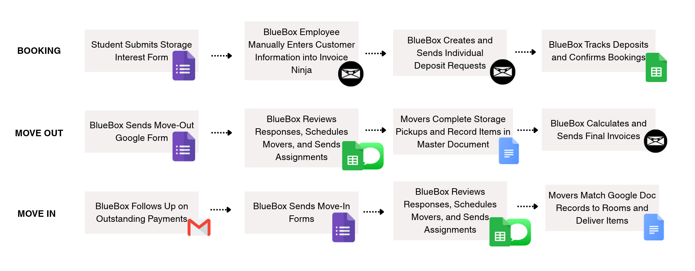
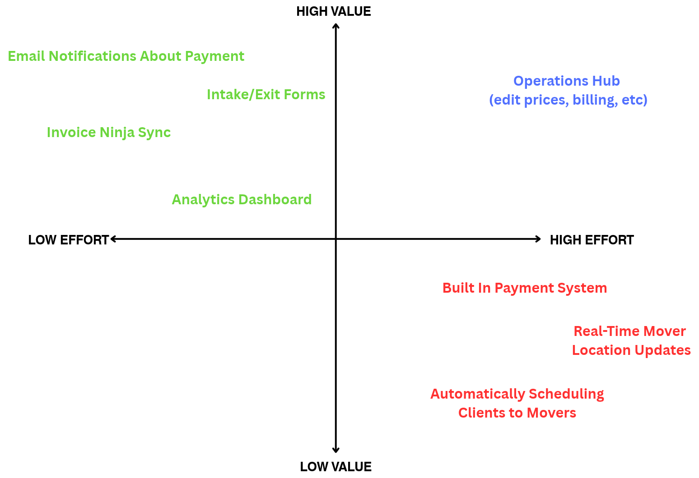
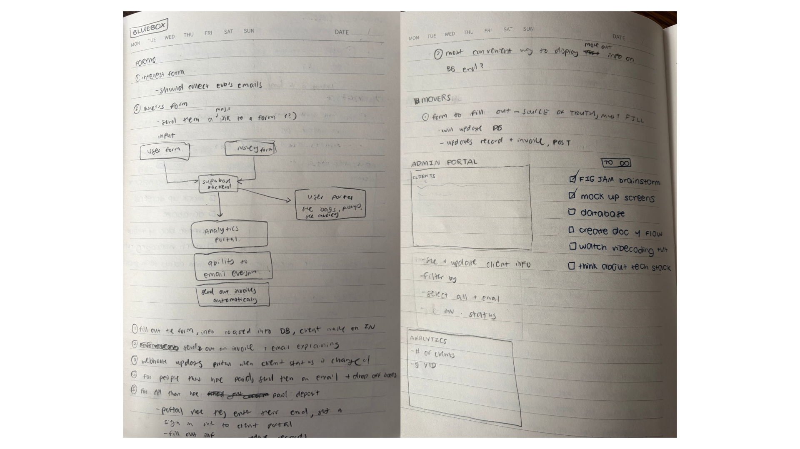
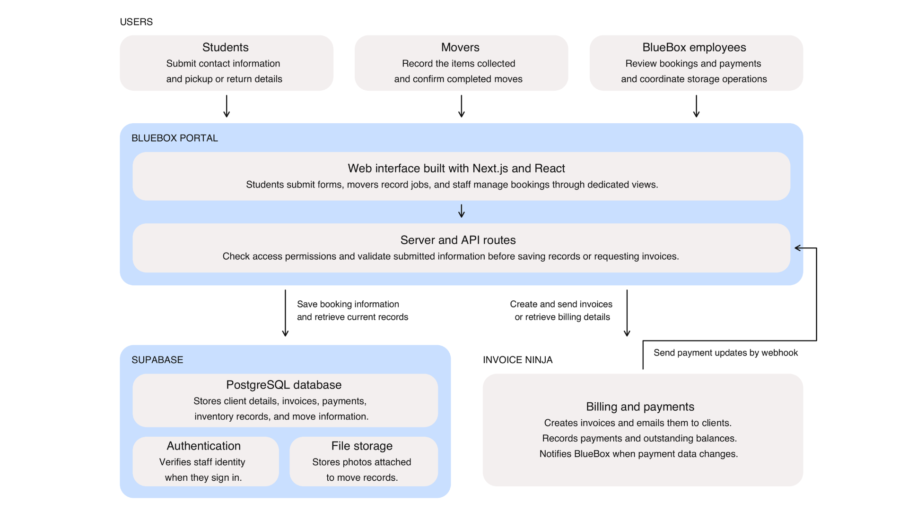
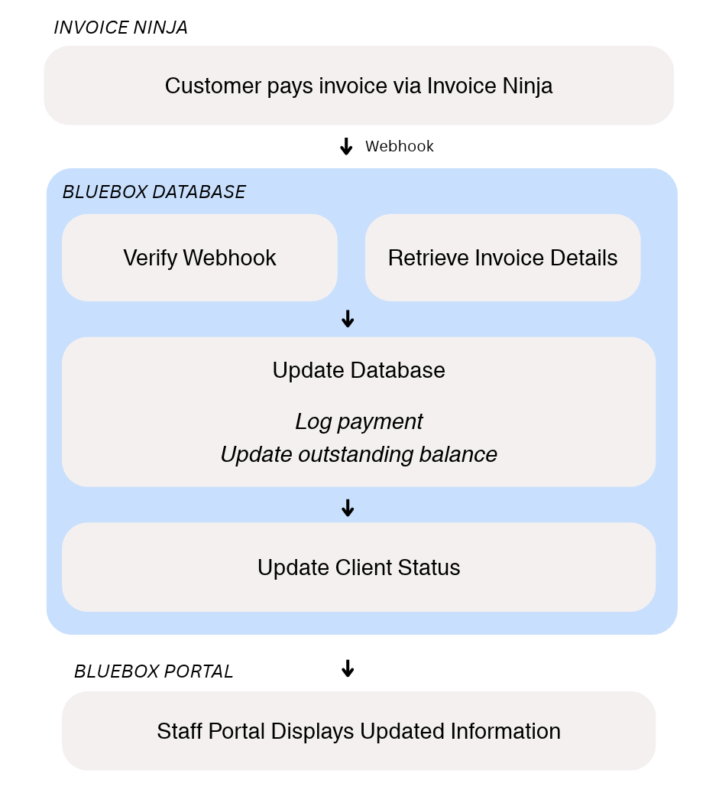
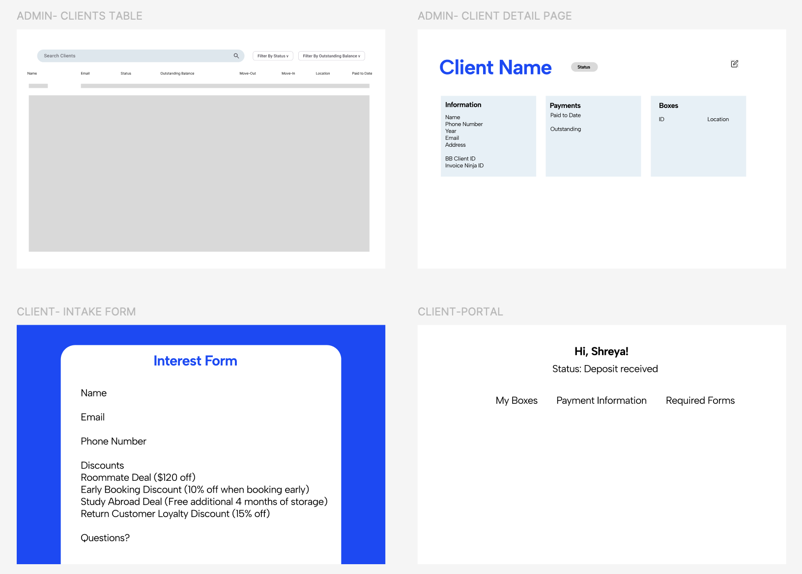
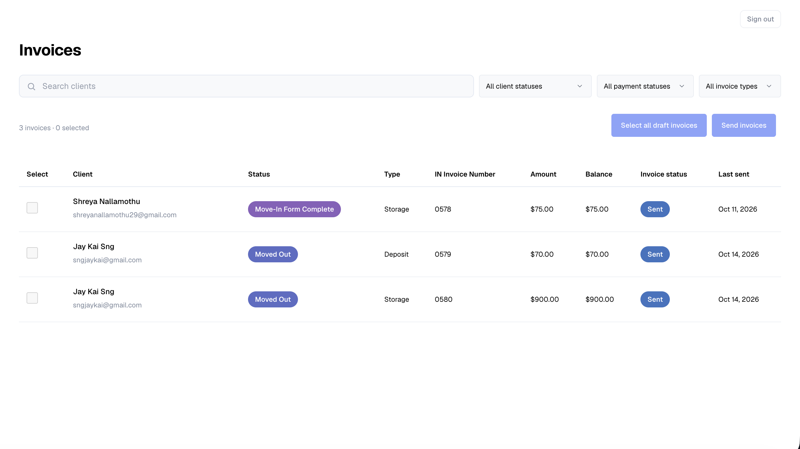
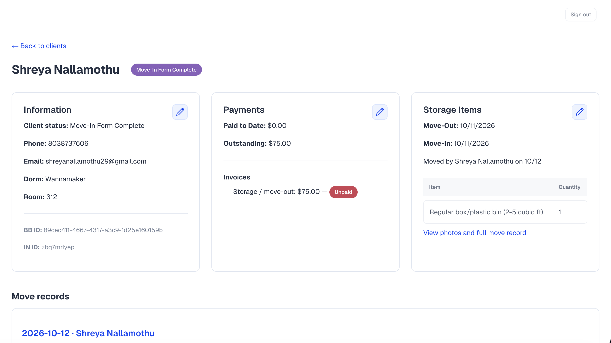
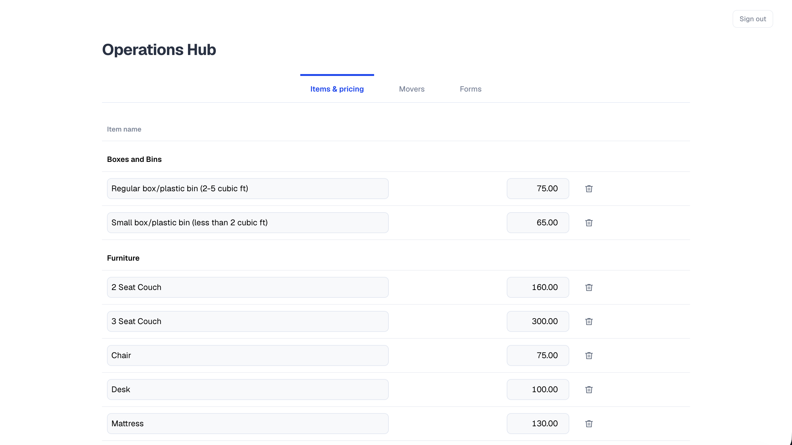
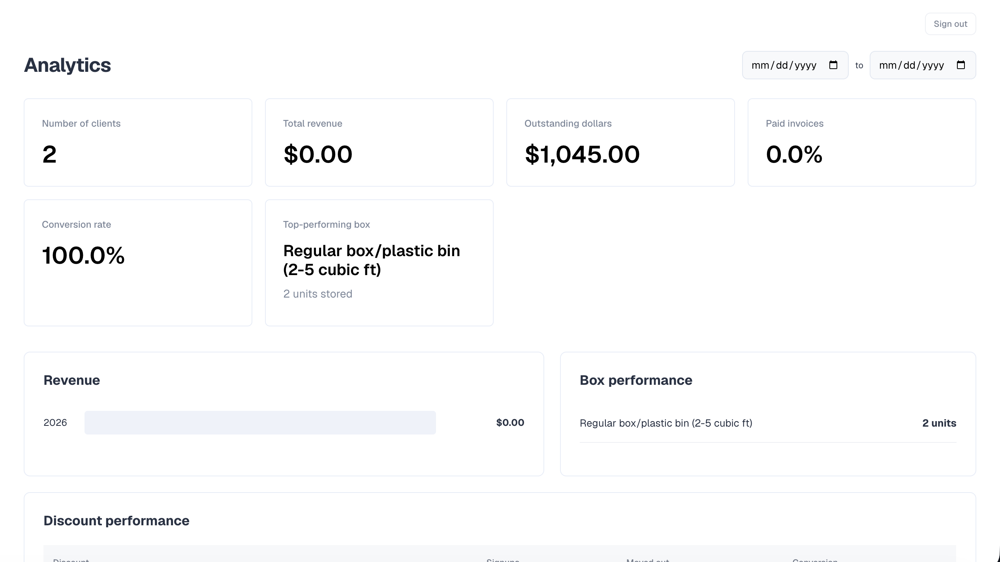

I built and launched an operations portal for BlueBox, a student-run summer storage business at Campus Enterprises. The portal brings bookings, mover assignments, and invoice information into one place, replacing a workflow scattered across forms, spreadsheets, and documents. BlueBox serves 150 clients and generates 15K+ in revenue annually.
BlueBox Storage was losing half its leads because it ran on a Frankensteined ecosystem of documents.
BlueBox handles everything from picking up students' belongings to storing them over the summer and returning them in the fall.
But almost all of this was manual. Staff had to log customer information, send invoices manually, and track information across many spreadsheets and Google Docs. This was reflected in their conversion rate:
of students who submitted an interest form ultimately became clients
I talked to all three sides of the operation to understand their needs.
Unlike a typical customer-facing product, BlueBox needed to serve three different groups with different needs: students, movers, and operations staff. I interviewed people from each group about what frustrated them with the current process.
Students
- Had to fill out multiple forms and repeat information they already shared
- Often wondered when their stuff would arrive
- Confused about invoices and payment deadlines
Movers
- Hard to keep track of their move assignments
- Didn't want to manually log everyone's belongings in Google Docs
BlueBox employees
- Spent hours manually entering customer information, sending invoices, and chasing down payments
- Had customer information scattered across Google Forms, spreadsheets, Invoice Ninja, and Google Docs
- Had a hard time getting basic numbers about the business
Both groups needed a better experience, but I decided to start with employees. That's where I found the most friction, since they were responsible for coordinating every part of the storage process.
After interviewing stakeholders and reviewing BlueBox's existing tools, I mapped out the entire workflow.

hree recurring pain points. Repetitive manual work, disconnected workflows, and limited visibility into business performance.
I decided to measure success in two ways: fewer manual steps for each booking and a higher conversion rate.
I explored three ways to improve operations, each with different tradeoffs.
I went with the operations hub. It was the biggest upfront investment, but it was also the only option that actually addressed all three problems instead of making the existing system a little easier to use.
Prioritizing impact while keeping the first version focused.
I mapped potential features on an impact vs. effort matrix. Simple features like intake forms and Invoice Ninja syncing were easy wins, while the operations hub took more work but had the potential to bring the whole workflow together.

I also had to make a few scope decisions:
Build payments or use what BlueBox already had?
Building payments from scratch would take a lot of time without making the actual storage experience much better. I kept Invoice Ninja for billing and payments and used BlueBox's database for bookings and mover assignments.
Automate mover assignments or keep them manual?
Mover schedules change constantly, so trying to automate every exception would get complicated fast. Instead, I focused on allowing staff to manually assign movers.
Connecting the workflows, from rough notes to a working system.
After deciding on the core features, I began mapping out these interactions, thinking through how information would move between Invoice Ninja, the operations hub, and different parts of the platform.


Using the Invoice Ninja API docs, I figured out what data I could pull into the portal and designed a payment flow that connected invoices to each customer's booking status.

From there, I broke the portal into its main pages and started wireframing in Figma.

One place to manage the summer storage process.
After building the core workflows, I launched the first version of the BlueBox operations portal, focused on the employees running BlueBox. Instead of constantly jumping between forms, spreadsheets, Google Docs, and Invoice Ninja, they could manage the storage process from one place.

Send invoices and track payment statuses in one place.

Keep customer details, payments, and move records together.

Manage storage pricing, movers, and forms from one hub.

See revenue, outstanding payments, and conversion at a glance.
Giving students more control over their own bookings.
After launch, I checked in with BlueBox employees to see what was working and what was still taking up their time. I found that the remaining portion of their manual work came from customers asking to change pickup details or update their information.
Even though employees could now manage these requests more efficiently, they still had to make every change themselves.
I decided to extend the portal to customers, building a self-service experience where students could view their bookings, change pickup details, and update their information without contacting BlueBox.